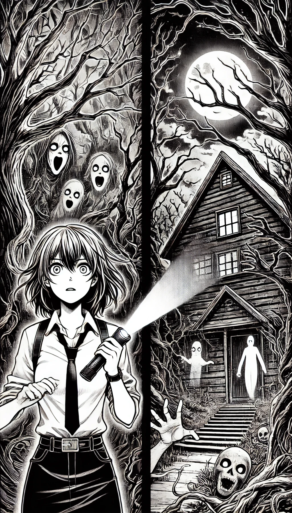

<html></html>
<head>
    <title>Historias alucinantes</title>
    <link rel="stylesheet" href="styles/global.css">
    <link href="https://fonts.googleapis.com/css2?family=Material+Symbols+Outlined" rel="stylesheet" />
</head>

<body>
    
        


        <h1>Lista de historias </h1>

        <ul>
            <li class="lecture">
                
                <div>
                    <h2>El Bosque de las Voces</h2>
                    <p>Creado por: Diego Aceves</p>
                    <p>Fecha de creación: 15 de octubre de 2024</p>
                    <a href="Bosquevoces.html">Leer ahora</a>    

                </div>
              
            </li>

            <li class="lecture">
                
                <div>
                    <h2> El Retrato Maldito</h2>
                    <p>La mirada que te sigue</p>
                    <p>Creado por: Diego Aceves</p>
                    <p>Fecha de creación: 26 de Noviembre de 2024</p>
                    <a href="Retratomaldito.html">Leer ahora</a>
                </div>
                
            </li>

            <li class="lecture">
                
                <div>
                    <h2>La Puerta Sellada</h2>
                    <p> La mirada que te sigue</p>
                    <p>Creado por: Diego Aceves</p>
                    <p>Fecha de creación: 14 de Febrero de 2025</p>
                    <a href="Puertasellada.html">Leer ahora</a>
                </div>
              
            </li>

            <li class="lecture">
                
                <div>
                    <h2>La Maldición de la Casa Thorne</h2>
                    <p>Creado por: Diego Aceves</p>
                    <p>Fecha de creación: 15 de octubre de 2024</p>
                    <a href="Maldicionthorne.html">Leer ahora</a>
                </div>
               
            </li>

            <li class="lecture">
                
                <div>
                    <h2>El Susurro del Bosque</h2>
                    <p>Creado por: Diego Aceves</p>
                    <p>Fecha de creación: 14 de octubre de 2024</p>
                    <a href="susurrobosque.html">Leer ahora</a>
                </div>
              
            </li>
        </ul>
    </div>
</body>
</html>